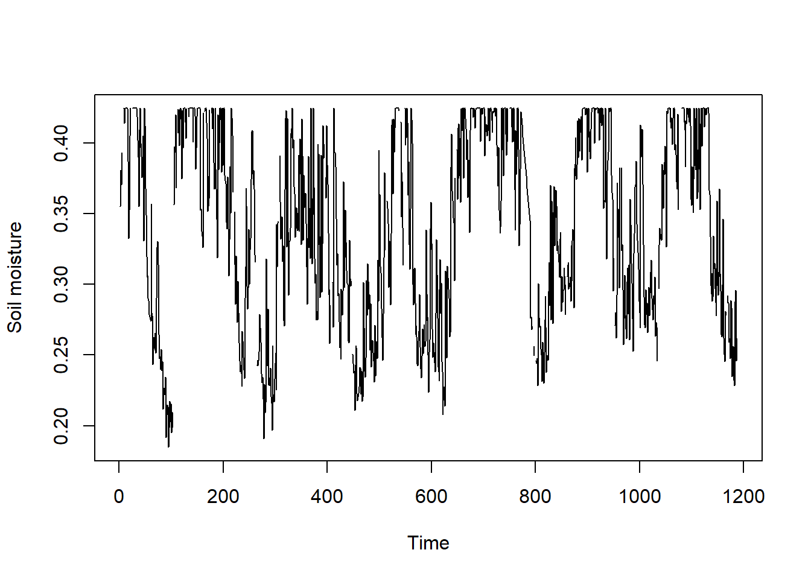

Computing operations in R can be made faster by the use of parallel computation. Generally, parallel computation is the simultaneous execution of different pieces of a larger operations across multiple computing processors or cores. Imagine, if you can execute an operation in X seconds on a single processor, would you be able to divide the processing time by n if you divide the task between n processors? The answer is…..almost.
Parallel processing comes with overhead computing costs associated with several processors/nodes interacting with each other over shared memory. So, for smaller datasets, the increment in computing performance using parallel processing will be minimal (if not negative). The real difference in computing performance is apparent in the case or large datasets.
In this chapter we will try several examples of the cell-wise, layer-wise and block-wise implementation of custom functions in parallel. Let us start by first importing surface soil moisture from NASA’s SMAP satellite from the netCDF provided with the sample dataset.
library(terra)# Import SMAP soil moisture NetCDF to the workspaceSMAPrast =rast("./SampleData-master/SMAP_L3_USA.nc")# Cell-wise mean of all layersmeanSMAP =mean(SMAPrast, na.rm=TRUE)# Plot spatial map for mean soil moisturelibrary(spData)us_shp =vect(us_states)plot(meanSMAP) plot(us_shp, add=TRUE)
9.1 Cell–wise Operation
9.1.1 Apply custom function to pixel time series
Once we have imported the netCDF file as rast object, we will apply a slightly modified version of previously used function my_fun (from Ch 8) for calculating mean, variance and skewness for time series data for each cell in parallel. We will use terra::app function to apply my_fun on SpatRaster in parallel.
For seamless implementation of function in parallel mode, care must be taken that all necessary are accessible to ALL cores and error exceptions are handles appropriately. We will modify my_fun slightly to highlight what it means in practice.
We will convert input x to a numeric array
We will remove NA values from dataset before calculation
We will use minSamp to fix minimum sample counts for calculation. If the number of observations for a pixel are less than minSamp, the grid is skipped.
We will use tryCatch to handle error exceptions
The basic rules to avoid errors: (a) checking that inputs are correct, (b) avoiding non-standard evaluation, and (c) avoiding functions that can return different types of output.
#~~ We will make some changes in the custom function for mean, variance and skewnessmy_fun =function(x, minSamp){ smTS=as.numeric(as.vector(x)) # Convert dataset to numeric array smTS=as.numeric(na.omit(smTS)) # Omit NA values # Implement function with trycatch for catching exception tryCatch(if(length(smTS)>minSamp) { # Apply minimum sample filter######## OPERATION BEGINS ############# meanVal=mean(smTS, na.rm=TRUE) # Mean varVal=var(smTS, na.rm=TRUE) # Variance skewVal=moments::skewness(smTS, na.rm=TRUE) # Skewness output=c(meanVal,varVal,skewVal) # Combine all statisticsreturn(output) # Return output######## OPERATION ENDS ############# } else {return(rep(NA,3)) # If conditions !=TRUE, return array with NA },error =function(e){return(rep(NA, 3))}) # If Error== TRUE, return array with NA}# Apply function to all grids in parallellibrary(tictoc)tic()stat_brk =app(SMAPrast, my_fun, minSamp =50, # Minimum assured samples for statisticscores =parallel::detectCores(logical =FALSE) -1) # Leave one core for housekeeping# Beware while using detectCores(). # The argument logical = FALSE returns the number of physical cores.# logical = TRUE returns the number of available hardware threads. names(stat_brk)=c("Mean", "Variance", "Skewness") # Add layer namestoc()
4.82 sec elapsed
# Plot statisticslibrary(cetcolor)colpal = cetcolor::cet_pal(20, name ="r2") plot(stat_brk, col=colpal)
9.1.2 Best practices for large-scale parallel operations
Error handling is the art of debugging unexpected problems in your code. One easy solution when looping through customized functions is to include print() messages after each major operation which can help indicate where the error might be happening.
When working with large spatial data, the following the steps listed below can be very helpful:
Check if the function works as expected by testing it first on a sample series extracted (using terra::extract function) for a test location from the multilayer raster. For example, for a sample location with Long=-100, and Lat=35 (in decimal degrees) we can extract a time series for soil moisture and test the custom function as follows:
# Location with Long=-100, and Lat=35 (in decimal degrees) extract time series ts_sample=terra::extract(SMAPrast, cbind(-100,35)) # Does it generate three numeric values as expected? my_fun(ts_sample, minSamp=50)
[1] 0.139086710 0.002358918 0.554885498
Try parallel operation on a smaller region before mounting large jobs for cpmputing. Pixel-wise implementation of the function can help identify errors in the code. Convert the cropped region into a data frame and apply function to time series of each cell. If your code throws error, troubleshoot carefully for the series which generates the error.
library(terra) e <-ext( c(-110,-108, 35,37) ) # Sample 2X2 degree domain p <-as.polygons(e) crs(p) <-"EPSG:4326"# Use this polygon to crop and mask the larger SpatRaster
Use tryCatchcarefully as it may suppress legitimate errors as well, generating spurious results. Test the codes for smaller region without tryCatch to test the robustness of your codes.
Remember, parallel computing may have some overheads upon creation and closing of clusters. A significant improvement in computing times using parallel techniques would be visible for large jobs.
9.2 Cell–wise Operation On Two Multilayer Rasters
We will use modeled daily evapotranspiration (ET) and maximum daily temperature (Tmax) from NOAA-Physical Sciences Lab’s repository for the year 2011 to find the correlation between ET and Tmax at each grid over CONUS. This dataset is available in NetCDF format (tmax.2011.nc and et.2011.nc). Due to sufficient availability of moisture in humid and sub-humid climates, an increase in temperature is matched with a corresponding increase in evapotranspiration (hence, positive correlation). In contrast, in arid and semi-arid regions, general scarcity of moisture restricts cooling of the surface by evaporation. Hence, larger fraction of incoming radiation is used up to heat up the land surface. This shows up as near zero or negative correlation between temperature and evapotranspiration in our analysis. This forms the basis of terrestrial energy balance.
# Open access path of the daily ET and Tmax .nc files for the year 2011tmax_path ="https://downloads.psl.noaa.gov//Datasets/livneh/metvars/tmax.2011.nc"et_path ="https://downloads.psl.noaa.gov//Datasets/livneh/fluxvars/et.2011.nc"# Download multilayer rasters from the NOAA-PSL serversdownload.file(url = tmax_path, method="curl", destfile ="tmax.2011.nc") download.file(url = et_path, method="curl", destfile ="et.2011.nc") # Custon function for correlation between time series from ET and Tmax multilayer rasters#~~~ arg: "pairwise.complete.obs" ignores NA values in either datasetcorfun=function (x, y) {return(cor(x, y, use ="pairwise.complete.obs"))}# Import netCDFs as multilayer rasterstmax=rast("tmax.2011.nc")et=rast("et.2011.nc")# Pixelwise correlation between daily ET and Tmaxxcor = terra::xapp(et, tmax, fun= corfun) # Plot map of the correlation plot(xcor, main=" Correlation: ET vs Tmax")
9.3 Layer–wise Parallel Computing
We will convert SpatRaster to a list of rasters and then we will apply my_fun to each element of the list in parallel using future_lapply. Beware while using detectCores(). The argument logical = FALSE returns the number of physical cores and logical = TRUE returns the number of available hardware threads.
library(terra)# Import SMAP soil moisture NetCDF to the workspaceSMAPrast =rast("./SampleData-master/SMAP_L3_USA.nc")# Convert Spatraster to a list of rastersrasList=as.list(SMAPrast[[1:10]]) # What will happen if we pass rast(rasList)?length(rasList)
[1] 10
# Custom function to be implemented on each layermy_fun =function(x){ x=as.numeric(values(x)) # Create vector of numeric values of SpatRaster meanVal=base::mean(x, na.rm=TRUE) # Mean varVal=stats::var(x, na.rm=TRUE) # Variance skewVal=moments::skewness(x, na.rm=TRUE) # Skewness output=c(meanVal,varVal,skewVal) # Combine all statisticsreturn(output) # Return output} # Test the function for one rastermy_fun(rasList[[10]])
[1] 0.19304984 0.01375684 0.65087480
# Apply function in parallel for all layerslibrary(parallel) library(future.apply) library(future)library(tictoc)# Create worker nodes with shared environment #~~~ employ max core-1 for processingfuture::plan(multicore, workers =detectCores(logical =FALSE) -1)# Deploy function in parallel tic()outStat=future_lapply(rasList, my_fun)toc()
22.21 sec elapsed
# Check output for one layer# outStat[[2]]
9.4 Block–wise Parallel Computing
In this section we will use a shapefile to extract cell values from a SpatRaster as a list using exact_extract. Summary statistics will be calculated in parallel using my_fun for dataset for each feature. Function exactextractr::exact_extract is faster and more suited for large applications compared to terra::extract. Although both perform similar operation with little changes in output format.
#~ Extract feature data as data framelibrary(exactextractr)library(sf)library(sp)featureData=exact_extract(SMAPrast, # Raster brick st_as_sf(us_shp), # Convert shapefile to sf (simple feature)force_df =FALSE, # Output as a data.frame?include_xy =FALSE, # Include cell lat-long in output?fun =NULL, # Specify the function to apply for each feature extracted dataprogress =TRUE) # Progressbar
length(featureData) # Same as feature count in CONUS? i.e. nrow(conus)
[1] 49
# Lets try out data for Louisianawhich(us_shp$NAME=="Louisiana") # Find feature number for Louisiana
[1] 10
# View(featureData[[10]]) # View the extracted data framenrow(featureData[[10]]) # No. pixels within selected feature
[1] 146
Each row in featureData[[10]] is the time series of cell values which fall within the boundary of feature number 10, i.e. Louisiana. Since exact_extract function provides coverage_fraction for each pixel in the output, we will make some minor change in the my_fun function to remove this variable before calculating the statistics.
# Extract SM time series for first pixel by removing percentage fractioncellTS=as.numeric(featureData[[10]][1,1:nlyr(SMAPrast)])# Plot time time series for the selected featureplot(cellTS, type="l", xlab="Time", ylab="Soil moisture")

#~~ We will make another small change in the custom function for mean, variance and skewnessmy_fun =function(x, minSamp =50, na.rm=TRUE){ xDF=data.frame(x) # Convert list to data frame xDF=xDF[ , !(names(xDF) %in%'coverage_fraction')] # Remove coverage_fraction column xData=as.vector(as.matrix(xDF)) # Convert data.frame to 1-D matrix smTS=as.numeric(na.omit(xData)) # Omit NA values # Implement function with trycatch for catching exception tryCatch(if(length(smTS)>minSamp) { # Apply minimum sample filter######## OPERATION BEGINS ############# meanVal=mean(smTS, na.rm=TRUE) # Mean varVal=var(smTS, na.rm=TRUE) # Variance skewVal=moments::skewness(smTS, na.rm=TRUE) # Skewness output=c(meanVal,varVal,skewVal) # Combine all statisticsreturn(output) # Return output######## OPERATION ENDS ############# } else {return(rep(NA,3)) # If conditions !=TRUE, return array with NA },error =function(e){return(rep(NA, 3))}) # If Error== TRUE, return array with NA}
Let’s apply my_fun to extracted data for each feature.
# Test the function for one blockmy_fun(featureData[[10]])
[1] 0.37738906 0.00616663 -0.38568026
# Apply function in parallel for all layerslibrary(parallel) library(snow)library(future.apply) library(future)# Specify argument minSamp to be passed along to all nodes minSamp=50# Minimum assured samples for statistics# Create worker nodes with shared environment future::plan(multisession, workers =detectCores(logical =FALSE) -1)# Apply the function in paralleloutStat=future_lapply(featureData, my_fun)# Test output for one featureoutStat[[10]] # Is this the same as before?
[1] 0.37738906 0.00616663 -0.38568026
# Extract each summary stats for all features from the output list FeatureMean=sapply(outStat,"[[",1) # Extract mean for all featuresFeatureVar=sapply(outStat,"[[",2) # Extract variance for all featuresFeatureSkew=sapply(outStat,"[[",3) # Extract skewness for all features# Let's place mean statistics as an attribute to the shapefileus_shp$meanSM=FeatureMean# Plot mean soil moisture map for CONUS library(rcartocolor)library(ggplot2)library(sf)library(sp)mean_map=ggplot() +geom_sf(data =st_as_sf(us_shp), # CONUS shp as sf object (simple feature)aes(fill = meanSM)) +# Plot fill color= mean soil moisturescale_fill_carto_c(palette ="BluYl", # Using carto color palettename ="Mean SM", # Legend namena.value ="#e9e9e9", # Fill values for NA direction =1)+# To invert color, use -1coord_sf(crs =2163)+# Reprojecting polygon 4326 or 3083 theme_void() +# Plot theme. Try: theme_bwtheme(legend.position =c(0.2, 0.1), legend.direction ="horizontal",legend.key.width =unit(5, "mm"),legend.key.height =unit(4, "mm"))mean_map